정보처리산업기사 (2009-08-30 기출문제)
1과목: 데이터 베이스
1. 다음 Postfix 표기법을 Infix 표기법으로 옳게 변환한 것은?
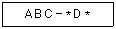
- A * (C-B) * D
- A * (B-C) * D
- B * (A-C) * D
- A * (B-D) * C
(정답률: 80%)

2. 하나의 릴레이션에 존재하는 후보 키들 중에서 기본키를 제외한 나머지 후보 키들을 무엇이라고 하는가?
- Alternative Key
- Foreign Key
- Super Key
- Degree Key
(정답률: 73%)
3. Fill in the properly word for blank.
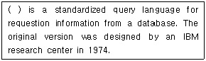
- DOMAIN
- C
- SCHEMA
- SQL
(정답률: 72%)
4. 관계대수와 관계해석에 대한 설명으로 옳지 않은 것은?
- 관계대수는 원하는 정보가 무엇이라는 것만 정의하는 비절차적 특징을 가지고 있다.
- 기본적으로 관계대수와 관계해석을 관계 데이터베이스를 처리하는 기능과 능력면에서 동등하다.
- 관계해석에는 튜플 관계해석과 도메인 관계해석이 있다.
- 관계해석은 수학의 프레디킷 해석(Predicate Calculus)에 기반을 두고 있다.
(정답률: 74%)
5. 데이터베이스의 3층 스키마에 대한 설명으로 옳은 것은?
- 외부스키마는 사용자가 직접 인터페이스 할 수 있는 바깥쪽의 스키마로서 일반적으로 서브스키마라고 한다.
- 개념스키마는 물리적인 데이터베이스 전체의 구조를 의미한다.
- 내부스키마는 논리적인 데이터의 구조를 의미한다.
- 내부스키마는 접근권한, 보안정책, 무결성규칙을 명세한다.
(정답률: 55%)
6. 데이터베이스 설계 단계 중 개념 스키마 모델링 및 트랜잭션 모델링과 관계되는 것은?
- 개념적 설계
- 논리적 설계
- 물리적 설계
- 요구조건 분석
(정답률: 62%)
7. 다음 자료를 삽입 정렬을 사용하여 오름차순 정렬하고자 할 경우, PASS 2의 결과는?
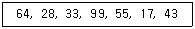
- 28, 33, 64, 55, 17, 43, 99
- 28, 33, 64, 99, 55, 17, 43
- 43, 28, 33, 64, 99, 55, 17
- 28, 33, 55, 64, 99, 17, 43
(정답률: 80%)
8. 외래키(foreign key)와 가장 직접적으로 관련된 제약조건은 어느 것인가?
- 개체 무결성
- 보안 무결성
- 참조 무결성
- 정보 우월성
(정답률: 77%)
9. 다음 그림에서 트리의 차수(Degree of a Tree)는?
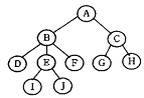
- 3
- 4
- 5
- 10
(정답률: 81%)
10. 시스템 카탈로그에 대한 설명으로 옳지 않은 것은?
- 기본 테이블, 뷰, 인덱스, 데이터베이스, 접근 권한 등의 정보를 저장한다.
- 시스템 카탈로그에 저장되는 내용을 메타데이터라고도 한다.
- 시스템 자신이 필요로 하는 스키마 및 여러 가지 객체에 관한 정보를 포함하고 있다.
- 시스템 테이블이므로 일반 사용자는 내용을 검색할 수 없다.
(정답률: 85%)
11. 릴레이션 R의 속성 A, B, C 에 대해 R. A → R. B 이고 R. B → R. C 일때 R. A → R. C 를 만족하는 관계를 무엇이라고 하는가?
- 완전 함수 종속
- 다치 종속
- 이행 함수 종속
- 조인 종속
(정답률: 73%)
12. SQL 명령 중 DDL에 해당하는 것으로만 짝지어진 것은?
- CREATE, ALTER, DROP
- CREATE, ALTER, SELECT
- CREATE, UPDATE, DROP
- DELETE, ALTER, DROP
(정답률: 81%)
13. 개체-관계 모델(E-R 모델)에 대한 설명으로 옳지 않은 것은?
- 개체 타입과 관계 타입을 이용해서 현실 세계를 개념적으로 표현하는 방법이다.
- E-R 다이어그램은 E-R 모델을 그래프 방식으로 표현한 것이다.
- E-R 다이어그램의 다이아몬드 형태는 관계 타입을 표현하며, 연관된 개체 타입들을 링크로 연결한다.
- 현실 세계의 자료가 데이터베이스로 표현될 수 있는 물리적 구조를 기술하는 것이다.
(정답률: 56%)
14. 순서가 D, C, B, A 로 정해진 입력 자료를 스택에 입력하였다가 출력한 결과가 될 수 없는 것은? (단, 보기 항에서 좌측 값부터 먼저 출력된 순서이다.)
- C, B, D, A
- B, C, A, D
- C, A, B, D
- B, D, A, C
(정답률: 57%)
15. 데이터베이스의 특징으로 옳지 않은 것은?
- 사용자의 문의에 대한 즉각적인 처리 및 응답
- 레코드의 값에 의한 참조가 아닌 사용자가 요구하는 데이터의 주소에 따라 참조
- 여러 사용자가 데이터베이스의 내용을 동시에 공유
- 데이터베이스 내용의 지속적인 갱신, 삽입, 삭제
(정답률: 77%)
16. 뷰(view)에 대한 설명으로 옳지 않은 것은?
- 실제 저장된 데이터 중에서 사용자가 필요한 내용만을 선별해서 볼 수 있다.
- 데이터 접근 제어로 보안을 제공한다.
- 뷰를 제거할 때는 DELETE문을 사용한다.
- 실제로는 존재하지 않는 가상의 테이블이다.
(정답률: 80%)
17. 다음과 같은 응용 분야에 가장 적합한 자료구조는?
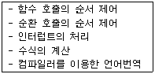
- 스택
- 큐
- 데크
- 트리
(정답률: 72%)
18. 해싱(Hashing)에서 한 개의 레코드를 저장할 수 있는 공간을 의미하는 것은?
- Bucket
- Synonym
- Slot
- Collision
(정답률: 54%)
19. The days of week(MONDAY, TUESDAY, WEDNESDAY, THURSDAY, FRIDAY, SATURDAY, SUNDAY) is a data object. Which is the proper structure of the days of week?
- tree
- linked list
- graph
- array
(정답률: 68%)
20. 오너-멤버(owner-member) 관계와 관련되는 논리적 데이터 모델은?
- 관계층 데이터 모델
- 네트워크 데이터 모델
- 계층형 데이터 모델
- 분산 데이터 모델
(정답률: 80%)
2과목: 전자 계산기 구조
21. 벡터 인터럽트 방식 중 인터럽트 반응시간(interrupt response time)에 대한 설명으로 옳은 것은?
- 인터럽트 요청 신호를 발생한 후부터 인터럽트 취급 루틴의 수행이 시작될 때까지이다.
- 일반적으로 하드웨어에 의한 방식이 소프트웨어에 의한 처리보다 느리다.
- 인터럽트 반응 속도는 하드웨어나 소프트웨어에 필요한 기억 공간에 의한 영향이 없다.
- 인터럽트 요청 신호의 발생 후부터 인터럽트 핸들러가 불리기까지의 시간이다.
(정답률: 65%)
22. 다음 그림은 어떤 데이터 형식을 나타낸 것인가?
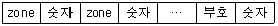
- Unpack 형 10진수
- 고정데이터 10진수
- Pack 형 10진수
- 가변논리 데이터
(정답률: 63%)
23. FLOATING POINT NUMBER에서 저장 비트가 필요 없는 것은?
- 부호
- 지수
- 소수점
- 소수(가수)
(정답률: 67%)
24. 사용되는 문자의 빈도수에 따라서 코드의 길이가 달라지는 코드는?
- 그레이(gray)
- 7421
- 허프만(huffman)
- 비퀴너리(biquinary)
(정답률: 62%)
25. 다음 ( ) 안에 알맞은 것은? (단, NOT은 고려하지 않는다.)
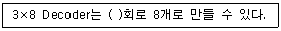
- NOR
- OR
- NAND
- AND
(정답률: 54%)
26. 어떤 Disk cartridge가 있는데 1면이 200개의 Track으로 되어 있고 각 Track은 4개의 Sector로 되어있다. Sector당 320 word를 기억시킬 수 있다면 이 Disk는 총 몇 word를 기록할 수 있는가?
- 5120000
- 512000
- 256000
- 50120000
(정답률: 45%)
27. 다음 중 ASCII 문자에 해당되지 않는 것은?
- 제어 문자
- 영문자
- 로마 숫자
- 아라비아 숫자
(정답률: 59%)
28. 인터럽트 요청에 대하여 CPU가 반드시 대응하여야만 하는 가장 높은 우선순위 인터럽트는?
- NMI(Non-Maskable Interrupt)
- 차단가능 인터럽트
- 인터럽트 인에이블(enable)
- 인터럽트 디제이블(disable)
(정답률: 50%)
29. 다음 중 논리 마이크로 동작을 표현한 것은?(단, R1, R2, R3은 레지스터를 의미한다.)
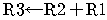
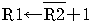
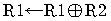
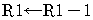
(정답률: 60%)
30. 오퍼랜드(operand)의 번지를 읽어내는 컴퓨터 사이클은?
- 간접 사이클
- 실행 사이클
- 직접 사이클
- 인터럽트 사이클
(정답률: 55%)
31. 다음 논리회로와 같은 게이트 회로는?
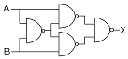
- AND
- NOR
- NAND
- EX-OR
(정답률: 52%)
32. 인터럽트가 발생하면 마이크로프로세서가 하는 동작은?
- 주 프로그램의 실행을 계속한다.
- 인터럽트 서브루틴으로 점프한다.
- 현재 저장된 데이터를 완전히 삭제한다.
- 다른 요청이 있을 때까지 정지한다.
(정답률: 63%)
33. 오퍼랜드(operand)가 레지스터를 지정하고, 다시 그 레지스터의 값이 유효주소가 되는 방식은?
- 직접 주소지정 방식
- 간접 주소지정 방식
- 레지스터 주소지정 방식
- 상대 주소지정 방식
(정답률: 46%)
34. 주기억장치의 기능이 아닌 것은?
- 데이터의 연산
- 프로그램의 기억
- 중간결과 기억
- 최종결과 기억
(정답률: 49%)
35. 명령 구성 형식 중 연산에 이용된 자료가 연산 후에도 기억장치에 그대로 보존되는 형식은?
- 1-주소 명령형식
- 2-주소 명령형식
- 3-주소 명령형식
- 0-주소 명령형식
(정답률: 44%)
36. 다음 16진수 연산의 ( )안의 값으로 옳은 것은?
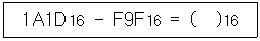
- A7E
- FFA
- A55
- AFA
(정답률: 61%)
37. 입ㆍ출력 장치와 주기억 장치를 연결하는 중개 역할을 담당하는 부분은?
- bus
- buffer
- channel
- console
(정답률: 66%)
38. 패리티 검사(parity check)에 대한 설명 중 옳지 않은 것은?
- 수신측에서는 패리티 생성기(parity generator)를 사용한다.
- 홀수(odd) 또는 짝수(even) 검사로 사용된다.
- 자료의 정확한 송신 여부를 판단하기 위해 사용된다.
- 홀수 패리티(odd parity)는 Exclusive-Nor function을 포함하여 구현한다.
(정답률: 44%)
39. 다음 논리도(Logic Diagram)에서 Y0에 1, Y1에 0이 입력되었을 때, 1을 출력하는 단자는?
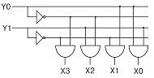
- X1
- X1과 X2
- X2
- X2과 X3
(정답률: 63%)
40. 다음 중 인터럽트 벡터에 필수적인 것은?
- 분기번지
- 메모리
- 제어규칙
- 누산기
(정답률: 48%)
3과목: 시스템분석설계
41. 객체에 대한 특성으로 옳은 내용 모두를 나열한 것은?
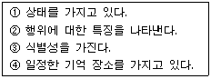
- ①, ④
- ①, ③, ④
- ②, ③
- ①, ②, ③, ④
(정답률: 53%)
42. 출력 설계 단계 중 출력 정보 분배에 대한 설계시 검토 사항으로 거리가 먼 것은?
- 분배 책임자
- 분배 경로
- 분배 주기 및 시기
- 출력 정보명
(정답률: 60%)
43. 시스템 개발 단계 중 입?출력 자료 및 코드의 설계가 수행되는 단계는?
- 유지 보수 단계
- 상세 설계 단계
- 조사 분석 단계
- 시스템 구현 단계
(정답률: 62%)
44. 코드 설계시 유의사항으로 옳지 않은 것은?
- 코드 처리시 집계가 편리해야 하고, 기억과 판단이 쉬워야 한다.
- 사람이 알기 쉬워야 한다.
- 코드 분류 기준에 따라 분류가 용이해야 한다.
- 자료 항목의 증가로 인한 코드의 추가는 제한적이어야 한다.
(정답률: 73%)
45. 파일의 종류 중 통계 처리나 파일의 자료에 잘못이 발생하였을 때 파일을 원상 복구하기 위해 사용되는 파일로서 현재까지 변화된 정보를 포함하고 있는 것은?
- Summary File
- Trailer File
- Transaction File
- History File
(정답률: 70%)
46. 문서화(Documentation)의 목적에 대한 설명으로 거리가 먼 것은?
- 개발 후 시스템 유지 보수의 용이
- 시스템 개발 중 추가 변경에 따른 혼란 방지
- 실수에 대한 책임의 명확화
- 시스템의 개발 요령과 순서를 표준화하여 보다 효율적인 작업 도모
(정답률: 78%)
47. 시스템의 특성 중 항상 다른 관련 시스템과 상호 의존 관계가 필요함을 의미하는 것은?
- 목적성
- 자동성
- 제어성
- 종합성
(정답률: 72%)
48. 오류 검사의 종류 중 산술 연산시 0으로 나눈 경우의 여부를 검사하는 것은?
- impossible check
- sign check
- overflow check
- unmatched record check
(정답률: 51%)
49. 파일 설계 단계 중 파일의 활동률을 확인하는 단계는?
- 파일 매체 검토
- 파일 편성법 검토
- 파일 항목 검토
- 파일 특성 조사
(정답률: 58%)
50. 자료 사전에서 “**”의 의미는 무엇인가?
- 반복
- 주석
- 선택
- 정의
(정답률: 75%)
51. 소프트웨어 생명 주기 종류 중 개발자가 구축한 소프트웨어의 모형을 사전에 만드는 공정으로 개발자가 사용자의 소프트웨어 요구 사항을 미리 파악하기 위한 매커니즘 역할을 하며, 사용자의 요구가 정확히 반영되었는지를 확인하기 위해서 요구 사항을 모델링하는 것은?
- 폭포수 모델
- 나선형 모델
- 4세대 기법
- 프로토타이핑 모델
(정답률: 66%)
52. 다음과 같은 코드 부여 방법의 종류는?
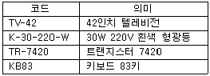
- Group Classification Code
- Block Code
- Letter Type Code
- Mnemonic Code
(정답률: 56%)
53. 럼바우의 모델링 방법 중 다음 설명에 해당하는 것은?
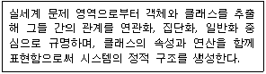
- 동적 모델링
- 기능 모델링
- 객체 모델링
- 개념 모델링
(정답률: 59%)
54. 시스템의 신뢰성 평가를 위한 검토 항목으로 거리가 먼 것은?
- 프로그램 표준화
- 시스템을 구성하고 있는 각 요소의 신뢰도
- 신뢰성 향상을 위해 시행한 처리의 경제적 효과
- 시스템 전체의 가동률
(정답률: 44%)
55. 모듈화의 특징이 아닌 것은?
- 모듈의 이름으로 호출하여 다수가 이용할 수 있다.
- 변수의 선언을 효율적으로 하여 기억장치를 유용하게 사용할 수 있다.
- 실행은 독립적이며, 컴파일은 종속적이다.
- 모듈마다 사용할 변수를 정의하지 않고 상속하여 사용할 수 있다.
(정답률: 57%)
56. 해싱에서 동일한 버켓 주소를 갖는 레코드들의 집합을 의미하는 것은?
- Slot
- Division
- Collision
- Synonym
(정답률: 67%)
57. 입력 설계 순서가 옳게 나열된 것은?
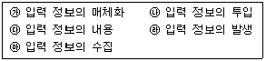
- 가 → 나 → 다 → 라 → 마
- 라 → 마 → 가 → 나 → 다
- 가 → 라 → 나 → 마 → 다
- 라 → 가 → 마 → 나 → 다
(정답률: 73%)
58. 코드 설계 단계 중 다음 설명에 해당하는 것은?
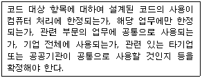
- 사용 범위의 결정
- 코드 목적의 명확화
- 코드 대상의 특성 분석
- 코드 부여 방식 결정
(정답률: 65%)
59. 표준 처리 패턴 중 어느 특성의 조건을 주어진 파일 중에서 그 조건을 만족하는 것과 만족하지 않는 것으로 분산처리 하는 것은?
- Distribution
- Extract
- Collate
- Generate
(정답률: 66%)
60. 다음 설명의 괄호 안 내용으로 가장 적절한 것은?
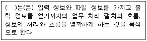
- 목표 설계
- 표준 설계
- 패턴 설계
- 프로세스 설계
(정답률: 63%)
4과목: 운영체제
61. UNIX에서 커널의 기능으로 옳지 않은 것은?
- 프로세스 관리
- 명령어 해석
- 파일 관리
- 입 ?출력 관리
(정답률: 62%)
62. 15K의 작업을 마지막 공백인 30K의 작업공간에 할당했을 경우, 사용된 기억장치 배치전략 기법은?
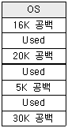
- First-Fit
- Best-Fit
- Worst-Fit
- Last-Fit
(정답률: 71%)
63. 프로세스 스케줄링 알고리즘 중 준비 큐 사이의 프로세스 이동이 가능하도록 설계된 것으로서, 특정 큐에서 오래 기다린 프로세스나 I/O 버스트 주기가 큰 프로세스 또는 foreground 큐에 있는 프로세스를 우선순위가 높은 단계의 준비 큐로 이동시키거나 CPU의 점유 시간이 긴 작업을 우선순위가 낮은 하위 단계의 준비 큐로 이동시킬 수 있게 하는 방법은?
- Round Robin
- Shortest Remaining Time
- Priority
- Multi-level Feedback Queue
(정답률: 43%)
64. 페이지 교체 알고리즘 중 참조 비트와 변형 비트가 사용되는 것은?
- LFU
- LRU
- NUR
- FIFO
(정답률: 63%)
65. 프로세스(Process)의 의미로 거리가 먼 것은?
- 실행 중인 프로그램
- PCB의 존재로서 명시되는 것
- 동기적 행위를 일으키는 주체
- 프로시저가 할동 중인 것
(정답률: 71%)
66. 3 페이지가 들어갈 수 있는 기억장치에서 다음과 같은 순서로 페이지가 참조될 때 FIFO 기법을 사용하면 페이지 부재(page fault)는 몇 번 일어나는가? (단, 현재 기억장치는 모두 비어 있다고 가정한다.)
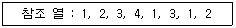
- 4
- 5
- 6
- 8
(정답률: 56%)
67. UNIX에서 파일 시스템 전체에 대한 종합적인 정보를 저장하고 있는 블록은?
- 슈퍼 블록
- 부트 블록
- 데이터 블록
- I-node 블록
(정답률: 55%)
68. 자원 보호 기법 중 접근 제어 행렬에서 수평으로 있는 각 행들만을 따온 것으로서 각 영역에 대한 권한은 객체와 그 객체에 혀용된 연산자로 구성되는 것은?
- Global Table
- Access Control List
- Capability List
- Lock/Key
(정답률: 48%)
69. 다음과 같은 트랙이 요청되어 큐에 도착하였다. 모든 트랙을 서비스하기 위하여 SSTF 스케줄링 기법이 사용되었을 때 모두 몇 트랙의 헤드 이동이 생기는가? (단, 현재 헤드의 위치는 50 트랙이다.)
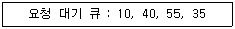
- 50
- 85
- 1⑤
- 110
(정답률: 60%)
70. 분산처리 운영시스템의 설명으로 옳지 않은 것은?
- 시스템의 점진적 확장이 용이하다.
- 신뢰성, 가용성이 증대된다.
- 자원의 공유와 부하 균형이 가능하다.
- 중앙 집중형 시스템에 비해 보안 정책이 간소해 진다.
(정답률: 68%)
71. 병렬처리의 주종(master/slave) 시스템에 대한 설명으로 옳지 않은 것은?
- 주프로세서는 연산만 수행하고 종프로세서는 입?출력과 연산을 수행한다.
- 주프로세서만이 운영체제를 수행한다.
- 하나의 주프로세서와 나머지 종프로세서로 구성된다.
- 주프로세서의 고장시 전체 시스템이 멈춘다.
(정답률: 68%)
72. 키 값으로부터 주소 변환을 위해서는 해시 함수나 색인 테이블을 사용하는 파일 구조는?
- 순차 파일
- 직접 파일
- 분할 파일
- 색인 순차 파일
(정답률: 28%)
73. 운영체제의 발달과정 순서가 옳은 것은?
- 시분할 시스템→일괄처리 시스템→분산처리 시스템
- 분산처리 시스템→시분할 시스템→일괄처리 시스템
- 일괄처리 시스템→시분할 시스템→분산처리 시스템
- 일괄처리 시스템→분산처리 시스템→시분할 시스템
(정답률: 54%)
74. HRN(Highest Response-Ratio Next) 스케줄링 기법에서 가변적 우선순위는 다음 식으로 계산된다. (ㄱ)에 알맞은 내용은?
- 대기시간
- (대기시간-서비스 받을 시간)
- 서비스 받을 시간
- (서비스 받을 시간-대기시간)
(정답률: 72%)
75. 다음과 같은 프로세스들이 차례로 준비상태 규에 들어올 경우 SJF 기법을 사용한다면 평균 대기시간은?
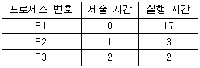
- 10
- 11
- 12
- 13
(정답률: 51%)
76. 상호배제의 문제는 병행하여 처리되는 여러 개의 프로세스가 공유 자원을 동시에 접근하기 때문에 발생한다. 따라서 공유되는 자원에 대한 처리 내용 중에서 상호 배제를 시켜야 하는 일정 부분에 대해서는 어느 하나의 프로세스가 처리하는 동안에 다른 프로세스의 접근을 허용하지 말아야 한다. 이때, 상호배제를 시켜야 하는 일정 부분을 무엇이라고 하는가?
- Working Set
- Page
- Semaphore
- Critical Section
(정답률: 51%)
77. 페이지 크기에 대한 설명으로 옳지 않은 것은?
- 페이지 크기가 클수록 프로그램 수행에 불필요한 내용까지도 주기억 장치에 적재될 수 있다.
- 페이지 크기가 작을수록 페이지 맵 테이블의 크기가 커진다.
- 페이지 크기가 클수록 마지막 페이지의 내부 단편화가 줄어든다.
- 페이지 크기가 작을수록 전체적인 입 ?출력 시간은 늘어난다.
(정답률: 44%)
78. 파일 디스크립터(File Descriptor)에 대한 설명으로 옳지 않은 것은?
- 파일이 액세스되는 동안 운영체제가 관리 목적으로 알아야 할 정보를 모아 놓은 자료 구조이다.
- 파일 디스크립터는 모든 시스템에 공통적인 구조를 가진다.
- 사용자가 직접 참조할 수 없다.
- 해당 파일이 open되면 FCB가 메모리에 옮겨진다.
(정답률: 42%)
79. 교착상태의 해결 방안 중 은행원 알고리즘과 관계되는 것은?
- Avoidance
- Prevention
- Detection
- Recovery
(정답률: 67%)
80. 운영체제에 대한 설명으로 옳지 않은 것은?
- 사용자와 시스템 간의 용이한 인터페이스를 제공한다.
- 프로그램 실행을 위한 목적 프로그램을 생성한다.
- 자원의 효과적 관리 및 스케줄링을 수행한다.
- 시스템의 오류를 검사하고 복구한다.
(정답률: 59%)
5과목: 정보통신개론
81. 다음 중 두 개의 채널사이에 보호대역(guard band)을 사용하여 인접한 채널간의 간섭을 막는 다중화방식은?
- 시분할 다중화방식
- 주파수분할 다중화방식
- 코드분할 다중화방식
- 공간분할 다중화방식
(정답률: 63%)
82. LAN에서 사용되는 매체 액세스 제어 기법과 관련 없는 것은?
- TOKEN-BUS
- CDMA
- CSMA / CD
- TOKEN-RING
(정답률: 58%)
83. 공중 패킷교환망은 ITU-T의 X.25를 적용하여, DTE와 DCE 간의 인터페이스를 규정하고 있다. X.25에서 사용하는 레벨 2의 프로토콜은?
- SDLC
- LAP-B
- CSMA / CD
- BISYNC
(정답률: 38%)
84. 동기식 전송방식 중 비트지향성(bit oriented) 방식의 프로토콜이 아닌 것은?
- HDLC
- ADCCP
- BSC
- SLDC
(정답률: 53%)
85. 다음 중 RS-232C 표준 인터페이스는 몇 개의 핀(PIN)으로 구성되는가?
- 10
- 22
- 25
- 32
(정답률: 59%)
86. 다음 중 OSI-7 참조모델에서 중계기능, 경로설정 등을 주로 수행하는 계층은?
- 네트워크 계층
- 응용 계층
- 데이터링크 계층
- 표현 계층
(정답률: 54%)
87. 다음 중 PCM(Pulse Code Modulation) 방식의 구성절차로 옳은 것은?
- 양자화→부호화→표본화→복호화
- 표본화→양자화→부호화→복호화
- 표본화→부호화→양자화→복호화
- 양자화→표본화→복호화→부호화
(정답률: 72%)
88. 다음 교환방식 중 축적 교환방식이 아닌 것은?
- 메시지 교환방식
- 회선 교환방식
- 데이터그램 패킷교환방식
- 가상회선 패킷교환방식
(정답률: 51%)
89. 다음 중 데이터 전송시 발생하는 오류 검출을 위한 방법으로 다항식코드를 사용하여 검사하는 기법은?
- 순환중복검사(CRC)
- 수직중복검사(VRC)
- 세로중복검사(LRC)
- 검사합(Checksum)
(정답률: 67%)
90. 다음 중 CATV 시스템의 주요 구성요소가 아닌 것은?
- 헤드엔드(Head End)
- 교환장치
- 전송장치
- 가입자 단말장치
(정답률: 38%)
91. 위상변조를 하는 동기식 변복조기의 변조속도가4800[Baud]이고 디비트(dibit)를 사용한다면 전송속도는?
- 1200[bps]
- 2400[bps]
- 4800[bps]
- 9600[bps]
(정답률: 52%)
92. 10 Base T 근거리통신망의 특성을 올바르게 나타낸 것은?
- 10[Mbps], Baseband, Twisted pair cable
- 10[Gbps], Baseband, Twisted pair cable
- 10[Gbps], Broadband, Coaxial cable
- 10[Mbps], Broadband, Coaxial cable
(정답률: 61%)
93. 다음 중 FDDI에 대한 설명으로 틀린 것은?
- FDDI는 한 개의 링으로 구성된다.
- 물리계층에 해당하는 프로토콜은 RHY, PMD가 있다.
- 토큰 매체 액세스 제어방법으로 작동한다.
- 매체로 광섬유케이블을 사용한다.
(정답률: 36%)
94. 다음 중 반송파의 진폭과 위상을 동시에 변조하는 방식은?
- ASK
- PSK
- FSK
- QAM
(정답률: 66%)
95. 다음 중 ISDN 채널구조에서 기본 인터페이스의 비트율은 몇 [kbps]인가?
- 64
- 144
- 162
- 192
(정답률: 35%)
96. 다음 중 HDLC 프레임을 구성하는 필드가 아닌 것은?
- FCS 필드
- Flag 필드
- Control 필드
- Link 필드
(정답률: 49%)
97. LAN을 구성하는 매체로서 광섬유 케이블의 일반적인 특성에 대한 설명으로 틀린 것은?
- 광대역, 저손실 및 잡음에 강하다.
- 동축케이블에 비해 감쇠 현상이 크다.
- 성형 및 링형의 형태에서도 사용이 가능하다.
- 전자기적인 전자파의 간섭이 없다.
(정답률: 66%)
98. 다음 중 공중전화교환망(PSTN)에 해당되는 것은?
- 정보통신에 적합한 패킷교환방식을 사용한다.
- 팩시밀리, 전화의 서비스 제공이 가능하다.
- 대역폭 사용이 융통적이다.
- 속도 및 코드 변환이 가능하다.
(정답률: 42%)
99. 다음 중 정지위성의 궤도 위치는 지구 적도 상공 몇 [km] 정도인가?
- 500
- 6600
- 14000
- 36000
(정답률: 57%)
100. 다음 중 광섬유 케이블에서 전파모드 또는 굴절률 분포에 따른 분류가 아닌 것은?
- 복합모드
- 계단형 다중모드
- 단일모드
- 언덕형 다중모드
(정답률: 36%)
Postfix 표기법은 연산자를 피연산자 뒤에 표기하는 방법입니다. 따라서, 주어진 식을 Infix 표기법으로 변환하기 위해서는 연산자를 피연산자 사이에 위치시켜야 합니다.
주어진 식을 Infix 표기법으로 변환하면 다음과 같습니다.
A * (B-C) * D